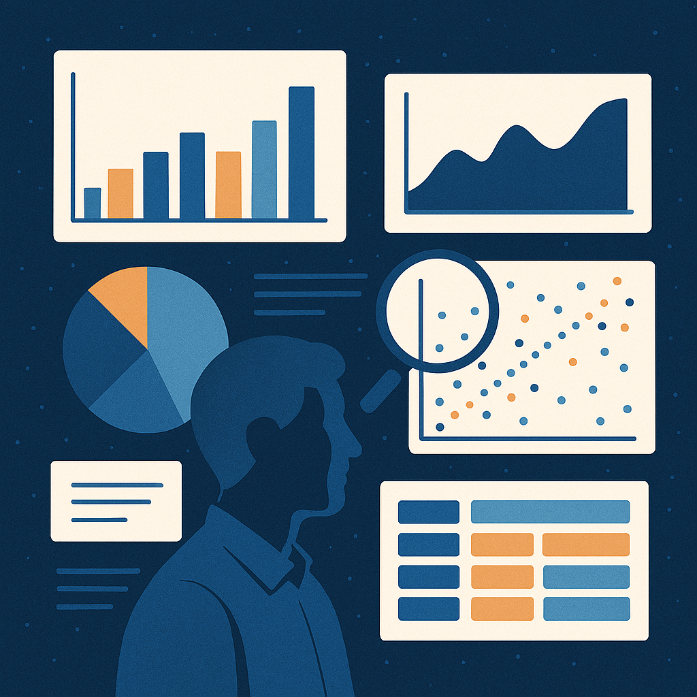

Análisis de datos
Te ayudo a descubrir patrones y tendencias ocultas en tus datos para identificar oportunidades, reducir costos y respaldar decisiones estratégicas basadas en evidencia.
Hola, mi nombre es
Analista de datos y desarrollador back-end
Soy bachiller en Ciencias Forestales de la Universidad Nacional Agraria La Molina (Lima, Perú) y tengo una fuerte orientación hacia la tecnología, los datos y la automatización. Lo que más me entusiasma de este campo es su constante evolución, sus desafíos dinámicos y el aprendizaje continuo que exige.
Domino herramientas como Python, Java, SQL, HTML, CSS y Power BI, y me apasiona convertir la información en decisiones estratégicas. Mi enfoque combina el pensamiento analítico, la precisión técnica y la mejora continua para generar resultados medibles y sostenibles.
Además de mi trabajo con datos, me interesa la electrónica, la automatización y la ciencia computacional, áreas que me permiten integrar hardware y software para optimizar procesos. Creo en la tecnología como una herramienta para simplificar la vida, mejorar negocios y cuidar el entorno.
Fuera del ámbito técnico, mantengo un estilo de vida activo, disfruto del deporte y encuentro en la lectura y la reflexión un espacio para equilibrar la mente y potenciar la creatividad.
Puedo ayudarlo a transformar sus datos en decisiones inteligentes y resultados tangibles. Combino mi formación científica con conocimientos en Python, Java, SQL, HTML, CSS y Power BI y sólidas habilidades interpersonales para ofrecer soluciones integrales que optimizan procesos, mejoran la eficiencia y aportan claridad a través de la información.

Te ayudo a descubrir patrones y tendencias ocultas en tus datos para identificar oportunidades, reducir costos y respaldar decisiones estratégicas basadas en evidencia.
Aplico técnicas de machine learning y análisis avanzado para anticipar resultados, optimizar procesos y fortalecer la competitividad de tu negocio.
Transformo datos complejos en visualizaciones claras e interactivas mediante Power BI, creando paneles personalizados que comunican información con impacto.
Elaboro documentación clara y precisa para proyectos técnicos, reportes e informes, asegurando que la información sea comprensible y fácilmente accesible.
Diseño interfaces limpias y funcionales que presentan datos y soluciones de forma accesible, combinando funcionalidad, estética y rendimiento.
Trabajo junto a tu equipo para integrar soluciones de datos y automatización en tus operaciones. Ya sea en proyectos puntuales o de largo plazo, mi objetivo es impulsar tu crecimiento.
Aquí puedes ver algunos de mis proyectos anteriores:
También puedes enviarme un correo a: aaizaguirreo@gmail.com